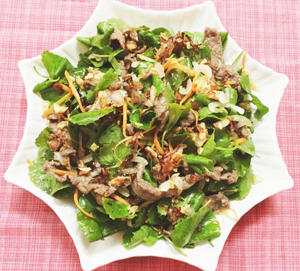

Gỏi rau má thịt bò

Nguyên Liệu:
- Thịt bò: 200g
- Rau má: 300g
- Hành trắng nhỏ: 1 củ
- Cà rốt, hành khô, tỏi, ớt, chanh: 1/2 củ, quả
- Gia vị: Dầu ăn, nước mắm, muối, đường, tiêu, dầu hào
Cách làm:
Bước 1:
- Hành củ, lột vỏ, rửa sạch, băm nhỏ. Cà rốt nạo vỏ, rửa sạch thái sợi nhỏ.. Ớt rửa sạch, cắt lát. Hành tây lột vỏ, rửa sạch thái miếng mỏng.
Bước 2:
- Rau má đem nhặt, rửa sạch rồi ngâm với nước muối loãng khoảng 20-30 phút rồi ra rổ để ráo nước.
Bước 3:
- Bước tiếp theo của hướng dẫn làm gỏi rau má thịt bò ngon, thịt bò rửa sạch, cho ra thớt thái miếng mỏng, cho vào bát rồi cho thêm ít
tỏi băm, tiêu và dầu hào vào ướp khoảng 5-10 phút cho ngấm.
Bước 4:
- Đổ khoảng 1/3 chén dấm ăn vào bát, cho thêm đường vào khuấy tan, rồi cho hành tây thái mỏng lên trên mặt khoảng vài phút cho bớt mùi hắc của hành.
Bước 5:
- Đặt chảo lên bếp, đổ dầu vào đun nóng.Khi dầu ăn sôi cho hành, tỏi thái nhỏ vào phi thơm, rồi xúc ra đĩa để riêng. Đồng thời cho
thịt bò đã ướp vào xào nhanh tay, thịt bò chín thì tắt bếp cho ra bát cho nguội chút.
Bước 6:
- Chanh cắt đôi, vắt lấy nước, rồi cho thêm 2 thìa nước mắm, 2 thìa đường, ít ớt cắt và tỏi băm vào bát đảo đều, nêm gia vị cho vừa ăn, để làm nước gỏi.
Bước 7:
- Cho cà rốt thái sợi, rau má, hành tây vào bát lớn, rồi đổ 2/3 chỗ nước chấm trộn gỏi vào hỗn hợp rau trong bát, trộn đều để khoảng 5-10 phút cho ngấm. Sau đó cho thịt bò đã xào chín vào và đổ từ từ phần nước
chấm gỏi còn lại vào, nêm vừa ăn. Cho ra đĩa rắc thêm chút hành, tỏi đã phi thơm ở trên là hoàn thành món gỏi rau má thịt bò rồi đó.